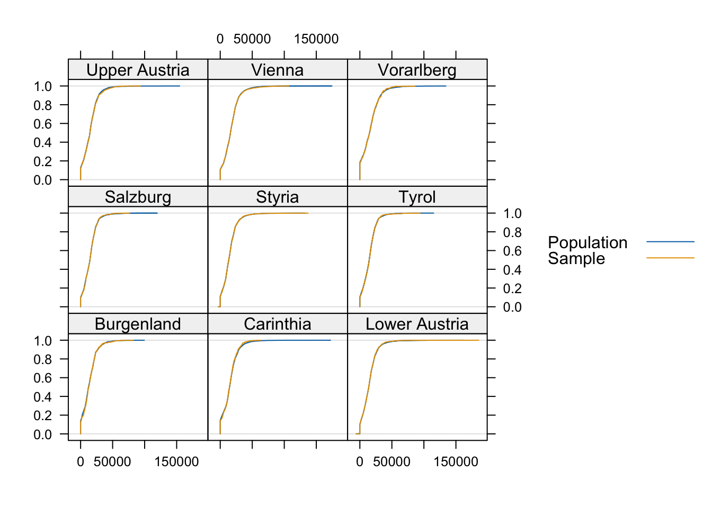
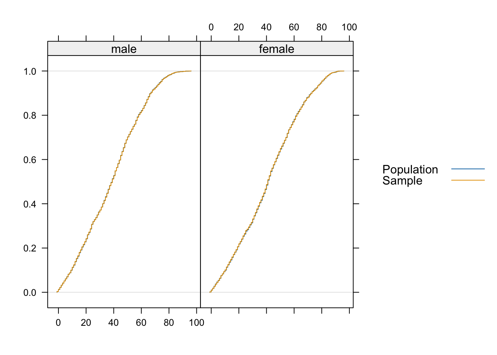
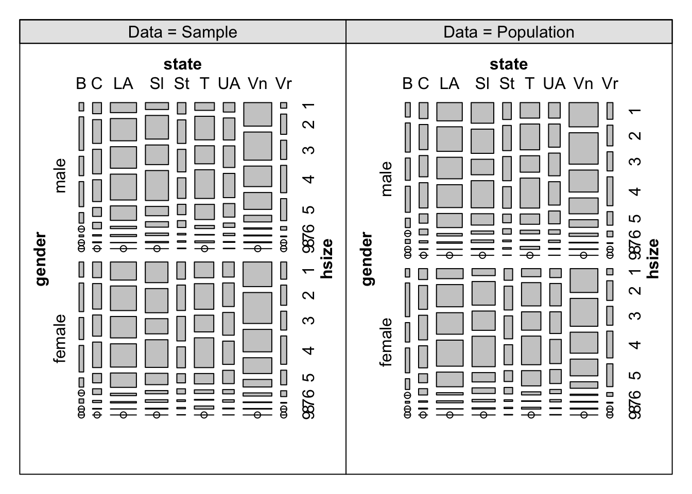

# so does synthetic reconstruction basically assigning non-integer weight to a synthetic microdata while combination optimization assigning integer weight to available micro data and both aim to have a population that match a macro data??Synthetic Population with simPop
Why synthetic population?
Purpose
Data privacy
Scale up sample data to better fit the distribution of population
Application
input data for machine learning (which requires a lot of data)
use as population for simulation problems
Types of data
Macro data:
- IPUMS data (at district level)
Micro data:
- HCDC data
Methodology
Synthetic Reconstruction (SR)
Keyword: re-weight
Combinatorial Optimization (CO)
Keyword: re-sample
Perhaps combine Synthetic Reconstruct (SR) technique to re-weight district level aggregated data and use that for CO?
Algorithm for CO:
Generative algo (less susceptible to local maxima)
- package GA, genSA
Modified simulated annealing
Package related to synthetic population:
- simPop
Model for prediction
Overall process
Code using simPop
Mostly follows SR and model
library(simPop)Warning: package 'simPop' was built under R version 4.3.1Loading required package: latticeLoading required package: vcdWarning: package 'vcd' was built under R version 4.3.3Loading required package: gridPackage simPop 2.1.3 has been loaded!Since simPop does explicit parallelization,
the number of data.table threads is set to 1.library(tidyverse)Warning: package 'ggplot2' was built under R version 4.3.1Warning: package 'dplyr' was built under R version 4.3.1Warning: package 'stringr' was built under R version 4.3.1── Attaching core tidyverse packages ──────────────────────── tidyverse 2.0.0 ──
✔ dplyr 1.1.4 ✔ readr 2.1.5
✔ forcats 1.0.0 ✔ stringr 1.5.1
✔ ggplot2 3.5.1 ✔ tibble 3.2.1
✔ lubridate 1.9.3 ✔ tidyr 1.3.1
✔ purrr 1.0.2 ── Conflicts ────────────────────────────────────────── tidyverse_conflicts() ──
✖ dplyr::filter() masks stats::filter()
✖ dplyr::lag() masks stats::lag()
ℹ Use the conflicted package (<http://conflicted.r-lib.org/>) to force all conflicts to become errorsInput data
Use survey data (micro data) as input
# use built-in survey data for demonstration purpose
data("eusilcS")
# rename some important variables for readability
eusilcS <- eusilcS %>% rename(hhid = db030, state = db040, gender = rb090, economic_status = pl030, weight = rb050, citizenship = pb220a)
head(eusilcS) hhid hsize state age gender economic_status citizenship netIncome
9292 1 2 Salzburg 72 male 5 AT 22675.48
9293 1 2 Salzburg 66 female 5 AT 16999.29
7227 2 1 Upper Austria 56 female 2 AT 19274.21
5275 3 1 Styria 67 female 5 AT 13319.13
7866 4 3 Upper Austria 70 female 5 AT 14365.57
7867 4 3 Upper Austria 46 male 3 AT 0.00
py010n py050n py090n py100n py110n py120n py130n py140n db090
9292 0.00 0 0 22675.48 0 0 0.00 0 7.822929
9293 0.00 0 0 0.00 0 0 16999.29 0 7.822929
7227 19274.21 0 0 0.00 0 0 0.00 0 8.788089
5275 0.00 0 0 13319.13 0 0 0.00 0 8.108452
7866 0.00 0 0 14365.57 0 0 0.00 0 7.509383
7867 0.00 0 0 0.00 0 0 0.00 0 7.509383
weight
9292 7.822929
9293 7.822929
7227 8.788089
5275 8.108452
7866 7.509383
7867 7.509383Create dataObj using specifyInput
inputData <- specifyInput(
eusilcS,
hhid = "hhid", # specify variable for household id
hhsize = "hsize", # specify household size
strata = "state", # variable on stata (regions, etc.)
weight = "weight" # variable for sample weight (note that the sample weight is reduced by a factor of 100)
)
inputData
--------------
survey sample of size 11725 x 19
Selected important variables:
household ID: hhid
personal ID: pid
variable household size: hsize
sampling weight: weight
strata: state
-------------- Calibrating sample weight
Calibrating sample weight by population totals (if the total population aka. macro data is available)
data("totalsRG")
totalsRG %>%
arrange(db040, rb090) rb090 db040 Freq
1 female Burgenland 146980
2 male Burgenland 140436
3 female Carinthia 285797
4 male Carinthia 270084
5 female Lower Austria 828087
6 male Lower Austria 797398
7 female Salzburg 722883
8 male Salzburg 702539
9 female Styria 274675
10 male Styria 259595
11 female Tyrol 619404
12 male Tyrol 595842
13 female Upper Austria 368128
14 male Upper Austria 353910
15 female Vienna 916150
16 male Vienna 850596
17 female Vorarlberg 190343
18 male Vorarlberg 184939Compared to input data
eusilcS %>%
group_by(gender, state) %>%
summarize(
freq = n()
) %>% arrange(state, gender)`summarise()` has grouped output by 'gender'. You can override using the
`.groups` argument.# A tibble: 18 × 3
# Groups: gender [2]
gender state freq
<fct> <fct> <int>
1 male Burgenland 200
2 female Burgenland 233
3 male Carinthia 461
4 female Carinthia 466
5 male Lower Austria 1050
6 female Lower Austria 1030
7 male Salzburg 393
8 female Salzburg 386
9 male Styria 907
10 female Styria 952
11 male Tyrol 550
12 female Tyrol 569
13 male Upper Austria 1052
14 female Upper Austria 1068
15 male Vienna 844
16 female Vienna 945
17 male Vorarlberg 307
18 female Vorarlberg 312Since the weight is reduced by a factor of 100, total population must also be scaled down by 100 before calibrating
totalsRG <- totalsRG %>%
mutate(Freq = Freq/100) %>%
rename( # rename to match colnames in inputData
gender = rb090, state = db040
)
# then calibrate the input data
calibratedWeights <- calibSample(inputData, totalsRG)
# calibrated weights can then be added to input data
addWeights(inputData) <- calibratedWeightsGenerate synthetic population data
Generate household structure
Built by resampling households from micro data (basically using CO with constraints being basic variables from macro data)
Why? Prevent creation of unrealistic household
Sampling technique: Alias sampling
syntheticPopulation <- simStructure(
data = inputData,
method = "direct",
basicHHvars = c("age", "gender", "state")
)
syntheticPopulation
--------------
synthetic population of size
85057 x 7
build from a sample of size
11725 x 19
--------------
variables in the population:
hhid,hsize,age,gender,state,pid,weightGenerate categorical variables
Approaches
model-based simulation
multinomial logistic regression
method = "multinom"decision tree (classification trees or random forest)
method = "ctree"ormethod = "cforest"
synthetic reconstruction
method = "distribution"(when macro data is available)
Code
syntheticPopulation <- simCategorical(
syntheticPopulation,
method = "multinom", # specify approach
# to find number of cores available, call parallel::detectCores()
nr_cpus = 8, # specify number of cpus for parallel computing
additional = c("economic_status", "citizenship")
)
syntheticPopulation
--------------
synthetic population of size
85057 x 9
build from a sample of size
11725 x 19
--------------
variables in the population:
hhid,hsize,age,gender,state,pid,weight,economic_status,citizenshipDemonstrating concept of synthetic reconstruction
# TODO: demonstrating concept of synthetic reconstruction
# synRec <- simCategorical()Generate continuous variables
Approaches
Multinomial logistic regression + Random drawing
method = "multinom": follow these stepsCategorize the continuous variable
Use regression model to get a category
Value from the largest category is drawn from a generalized Pareto distribution
Logistic regression + Linear regression
method = "lm"(necessary for semi-continuous distribution): follow these stepsApply logistic regression model
Perform linear regression
syntheticPopulation <- simContinuous(
syntheticPopulation,
additional = c("netIncome"), # specify continuous variable to simulate
upper = 200000, # set upper limit
zeros = TRUE, # specify whether simulated vars are semi-continuous (contains many 0 values)
imputeMissing = FALSE # whether to impute missing values using hock-deck
)
syntheticPopulation
--------------
synthetic population of size
85057 x 11
build from a sample of size
11725 x 19
--------------
variables in the population:
hhid,hsize,age,gender,state,pid,weight,economic_status,citizenship,netIncomeCat,netIncome# view categories
unique(pop(syntheticPopulation, var=c("netIncomeCat"))) [1] (1.79e+04,2.06e+04] (0,5.05e+03] (8.4e+03,1.11e+04]
[4] 0 (1.11e+04,1.38e+04] (5.05e+03,8.4e+03]
[7] (2.35e+04,2.89e+04] (1.59e+04,1.79e+04] (2.89e+04,2e+05]
[10] (1.38e+04,1.59e+04] (2.06e+04,2.35e+04] [-4.37e+03,-3.11e+03)
[13] [-5.81e+03,-4.37e+03) [-3.11e+03,0)
14 Levels: [-5.81e+03,-4.37e+03) [-4.37e+03,-3.11e+03) [-3.11e+03,0) ... (2.89e+04,2e+05]Can also manually adjust values of the variables by accessing through pop(). The returned data is a data.table
Example: set net income for individuals at age <16 to NA
# enforce constraints
incomeConstraints <- pop(syntheticPopulation, var = c("age", "netIncome"))
incomeConstraints$age <- as.numeric(incomeConstraints$age)
incomeConstraints[age < 16, netIncome := NA]
# override values for netIncome variable in synthetic population
pop(syntheticPopulation, var = c("netIncome")) <- incomeConstraints$netIncomeSimulation of components
Some variables in surveys are not collected directly but derived from other related variables. (e.g. net income computed from multiple income sources)
Those related variables (referred to as components variables) can be generated by breaking down the synthetically generated continuous variable. This is done by re-sampling fractions from available survey data.
simPop have function simComponents() to accomplish that.
# --- Categorize netIncome for use as a conditioning variable ------
sIncome <- manageSimPopObj(syntheticPopulation, var = "netIncome", sample=TRUE)
# NOTE: it is equivalent to samp(syntheticPopulation, var = "netIncome") but samp() allows get-set multiple variables
# using manageSimPopObj as getter/setter is usually safer
sWeight <- manageSimPopObj(syntheticPopulation, var = "weight", sample=TRUE)
pIncome <- manageSimPopObj(syntheticPopulation, var = "netIncome") # netIncome for synthetic population
# create breaks for categorizing
breaks <- getBreaks(
x = sIncome, # specify semi continuous variables
w = sWeight, # specify sample weight
upper = Inf, # upper bound of the variable, set as Inf to make sure both sample and pop values are in bound
equidist = FALSE # specify whether break points should be equal distance
)
# update categories for both population and and sample
syntheticPopulation <- manageSimPopObj(
syntheticPopulation,
set=TRUE, # specifying usinng setter
var = "netIncomeCat",
sample = TRUE, # update sample first
values = getCat(x = sIncome, breaks)# update categories with generated break points
)
syntheticPopulation <- manageSimPopObj(
syntheticPopulation, set=TRUE, var = "netIncomeCat",
sample = FALSE, # update population here
values = getCat(x = pIncome, breaks)
)
# ----- Simulate net income components ------
syntheticPopulation <- simComponents(
simPopObj = syntheticPopulation,
total = "netIncome", # specify the variable for total
# specify the component variables
components = c("py010n", "py050n", "py090n", "py100n", "py110n", "py120n", "py130n", "py140n"),
# specify conditions for computing fractions of each component
conditional = c("netIncomeCat", "economic_status"),
replaceEmpty = "sequential",
seed = 1)
syntheticPopulation
--------------
synthetic population of size
85057 x 19
build from a sample of size
11725 x 20
--------------
variables in the population:
hhid,hsize,age,gender,state,pid,weight,economic_status,citizenship,netIncomeCat,netIncome,py010n,py050n,py090n,py100n,py110n,py120n,py130n,py140nGeographic allocation of population
Synthetic population can be assigned to smaller geographical unit if data for population at lower geographical unit is available. In simPop this is done using simInitSpatial()
Required inputs: one or 2 table(s) with 3 variables
Boarder geographical area (area in input sample data)
Smaller area (area to assign the synthetic population to)
Population for smaller area (either for household or individual)
Simulate census data with smaller geographical unit
# Function for simulating data for smaller geographical unit for demonstration purpose
simulate_districts <- function(inp){
hhid <- "hhid"
region <- "state"
a <- inp[!duplicated(inp[, hhid]), c(hhid, region)]
spl <- split(a, a[,region]) # get sample hhid-region pairs grouped by regions
regions <- unique(inp[, region]) # get regions in input sample data
# assign each household to a smaller area
tmpres <- lapply(1:length(spl), function(x){
# simulate code for smaller area
codes <- paste(x, 1:sample(10:90, 1), sep="")
spl[[x]]$district <- sample(codes, nrow(spl[[x]]), replace = TRUE)
spl[[x]]
})
tmpres <- do.call("rbind", tmpres)
tmpres <- tmpres[, -2]
out <- merge(inp, tmpres, by.x = hhid, by.y = hhid, all.x = TRUE)
invisible(out)
}
# create census data with district
census <- simulate_districts(eusilcS)Create input data for assigning synthetic population to smaller geographical unit
# create the contingency table for household per region
tabHH <- as.data.frame(
xtabs(weight ~ state + district, data = census[!duplicated(census$hhid), ])
)
# create the contingency table for population per region
tabP <- as.data.frame(
xtabs(weight ~ state + district, data = census)
)Code for geographical allocation
syntheticPopulation <- simInitSpatial(
syntheticPopulation,
# either tspatialHH or tspatialP is required. Assigning values for both also works.
tspatialHH = tabHH, # specify contingency table for household
tspatialP = tabP, # specify contingency table for individual
additional = "district", # specify variable for smaller area (must exist in tspatial table)
region = "state" # specify variable for larger area (must exist in tspatial table)
)
syntheticPopulation
--------------
synthetic population of size
85057 x 20
build from a sample of size
11725 x 20
--------------
variables in the population:
hhid,hsize,age,gender,state,pid,weight,economic_status,citizenship,netIncomeCat,netIncome,py010n,py050n,py090n,py100n,py110n,py120n,py130n,py140n,districtCalibrate the synthetic population
Approach
Calibrate against a known distribution of the population using Combinatorial Optimization
Code for calibrating
obtain a “known distribution” from synthetic data for demonstration purpose
# create another synthetic data to obtain "known distribution"
census <- simStructure(data = inputData, method = "direct", basicHHvars = c("age", "gender", "state"))
census <- simCategorical(census, additional = c("economic_status", "citizenship"))
# create known distribution
census <- data.frame(pop(census))
knownDistribution <- as.data.frame(
xtabs(~ state + gender + economic_status, data=census)
)# add known distribution to synthetic population
syntheticPopulation <- addKnownMargins(syntheticPopulation, knownDistribution)
# and calibrate using simulated annealing
adjustedPopulation <- calibPop(
syntheticPopulation,
split = "state", # split by region
temp = 1, # starting temperature for simulated annealing
epsP.factor = 0.00005, # adjust factor of acceptance error on individual level
maxiter = 200, temp.cooldown = 0.85, factor.cooldown = 0.85,
min.temp = 0.001, nr_cpus = 8
) Validate synthetic population with built-in tools
Computational tools
spTable() computes contingency table for survey data and simulated data
Visualization tools
spMosaic() for mosaic plot
spCdfplot() for cumulative distribution plot
spBwplot() for boxplot
# plot cdf for netIncome conditioning on state
spCdfplot(syntheticPopulation, x = "netIncome", cond = "state")Warning in spCdf(x, w, ...): number of finite values in 'x' is smaller than
'n': no approximation
Warning in spCdf(x, w, ...): number of finite values in 'x' is smaller than
'n': no approximation
Warning in spCdf(x, w, ...): number of finite values in 'x' is smaller than
'n': no approximation
Warning in spCdf(x, w, ...): number of finite values in 'x' is smaller than
'n': no approximation
Warning in spCdf(x, w, ...): number of finite values in 'x' is smaller than
'n': no approximation
Warning in spCdf(x, w, ...): number of finite values in 'x' is smaller than
'n': no approximation
# check age-gender distribution
spCdfplot(syntheticPopulation, x = "age", cond = "gender")
# compare generated household structure of original vs simulated data
tab <- spTable(syntheticPopulation, select = c("gender", "state", "hsize"))
spMosaic(tab, labeling = labeling_border(abbreviate = c(state = TRUE)))
# check state-netIncome of original vs simulated data
spBwplot(
syntheticPopulation, x = "netIncome", cond = "economic_status"
)